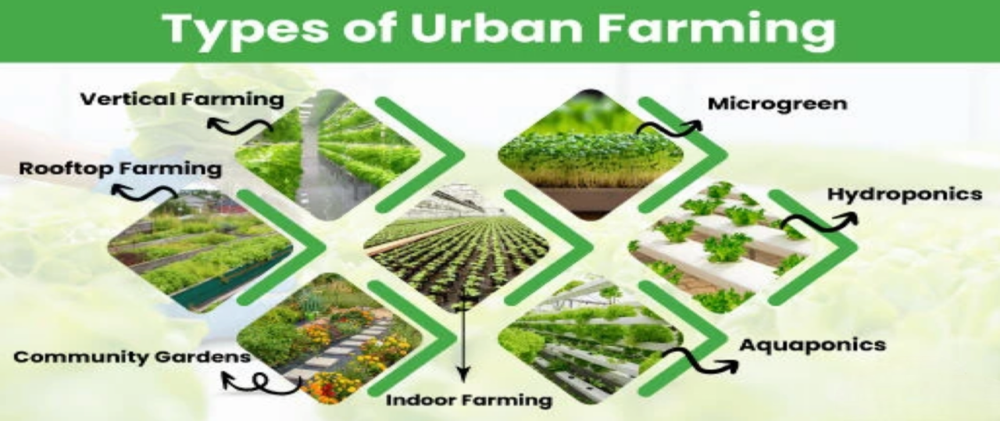
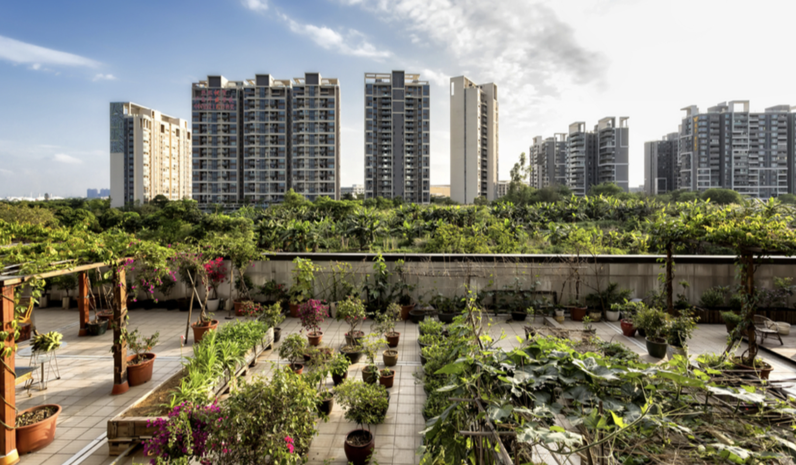

URBAN AGRICULTURE
Urban agriculture refers to the practice of growing, processing, and distributing food, as well as cultivating plants and raising animals, within or around urban areas. It can take various forms, including community gardens, rooftop farming, vertical gardening, and aquaponics. Urban agriculture contributes to food security, sustainability, and community engagement in cities.

TERRACE FARMING
"Terrace farming is a process of using innovative scientific farming techniques to produce high yield and high quality of fresh organic food in very limited urban areas like terraces and balconies, all year-round".
COMMUNITY
To be a part of community, click the button
MARKETHOUSE
To Purchase items, click the button
To sell items, click the button
About Us
Welcome to our homepage. We provides various ideas to our clients to grow plants and also has a markethouse service to sell and purchase organic items. This is a brief introduction about our vision,mission and objectives of what we do.
Our Vision
One-stop solution for farmers & agribusiness enterprises, offering comprehensive services.
Our Mission
Encouraging people to do more of urban terrace farming.
Our Objectives
• One of the primary objectives is to grow fresh, organic produce in urban areas, contributing to local food production.
• Creating green spaces in urban environments can contribute to the conservation of biodiversity by providing habitats for insects, birds, and other wildlife.
• Organic waste can be composted and used to fertilize rooftop gardens, reducing the amount of waste sent to landfills.
Contact Us
If you have any questions or need more information, please contact us at contact@myhomepage.com.